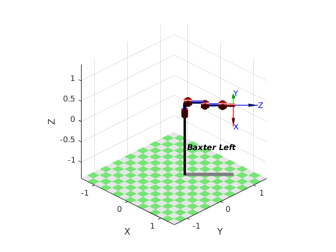
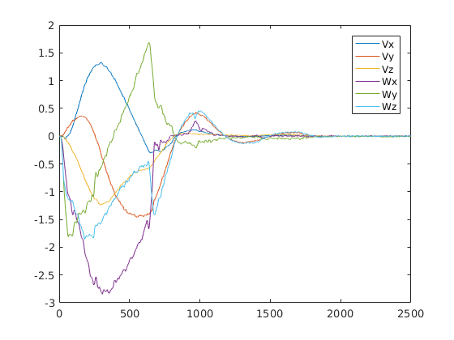
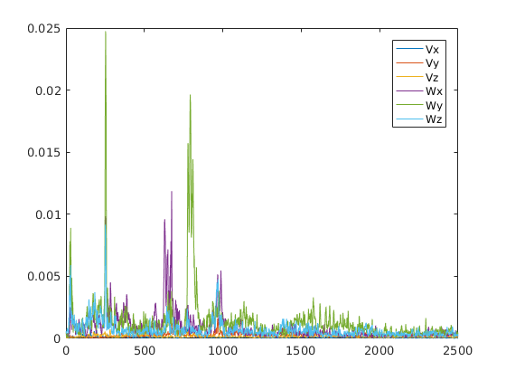

Title
ME537 - Adv Robotics Lab1 Evan Justin Taylor Jae Lee Mark Peterson
Contents
Part 1
% dh = [THETA D A ALPHA SIGMA OFFSET] where OFFSET is a constant % displacement between the user joint angle vector and the true kinematic solution. % SIGMA=0 for a revolute and 1 for % a prismatic joint, OFFSET is zero clear; clc; close all; baxter(1) = Link([0, 0.27035, 0.069, -pi/2, 0, 0]); baxter(2) = Link([0, 0, 0, pi/2, 0, pi/2 ]); baxter(3) = Link([0, 0.36435, 0.069, -pi/2, 0, 0 ]); baxter(4) = Link([0, 0, 0, pi/2, 0, 0]); baxter(5) = Link([0, 0.37429, 0.01, -pi/2, 0, 0]); baxter(6) = Link([0, 0, 0, pi/2, 0, 0]); baxter(7) = Link([0, 0.22952, 0, 0, 0, 0]); leftArm = SerialLink(baxter, 'name', 'Baxter Left'); leftArm.base = transl(0.064614, 0.25858, 0.130)*rpy2tr(0, 0, pi/4); q = zeros(4,7); leftArm.plot(q(1,:)); view(45,30); q(1,:) = [ 0.03298059 -0.29260684 0.20977187 0.15416507 0.31791752 -0.21935925 0.17487381]; q(2,:) = [-0.91501954 -0.68760689 0.18829614 1.62640313 -1.24290793 1.17502928 0.15071361]; q(3,:) = [ 0.57179134 -0.97100984 0.57102435 -0.05062137 1.69734974 -1.57386429 0.50161172]; q(4,:) = [ 0.52423793 -1.4216167 0.66996611 0.03950001 -2.58207316 0.54417968 -2.85397126]; pose_estimated = zeros(4,4,4); pose_actual = zeros(4,4,4); error = zeros(4,1); string1 = 'data/Data'; string2 = '.mat'; for i = 1:4 str = ['pose',num2str(i)]; pose_estimated(:,:,i) = leftArm.fkine(q(i,:)); pose_temp = load([string1,num2str(i),string2]); pose_actual(:,:,i) = [pose_temp.R, pose_temp.position'; 0 0 0 1]; error(i) = sum(sum(abs(pose_actual(:,:,i)-pose_estimated(:,:,i)))'); end pose_estimated pose_actual % Error is the sum of every element error in the transformation matricies between % pose estimaged and pose actual. error % Discussion % Each of the seven rotary joints inacurately measure the joint angle. % The robot may command a specific angle, but the actual joint angle may not % be exactly on the commanded angle because of encoder resolution.
pose_estimated(:,:,1) =
-0.2634 -0.6627 0.7010 0.7553
0.6537 0.4118 0.6349 1.0161
-0.7095 0.6255 0.3247 0.5596
0 0 0 1.0000
pose_estimated(:,:,2) =
-0.7613 -0.6482 -0.0151 0.6746
-0.3850 0.4707 -0.7939 0.0706
0.5217 -0.5985 -0.6079 0.1395
0 0 0 1.0000
pose_estimated(:,:,3) =
0.3583 0.3591 0.8618 0.3377
0.0732 -0.9310 0.3576 0.8514
0.9307 -0.0650 -0.3598 0.9069
0 0 0 1.0000
pose_estimated(:,:,4) =
-0.8262 -0.3431 0.4469 0.1881
0.3167 -0.9388 -0.1353 0.4708
0.4660 0.0298 0.8843 1.3245
0 0 0 1.0000
pose_actual(:,:,1) =
-0.2659 -0.6629 0.6999 0.7533
0.6520 0.4111 0.6371 1.0184
-0.7101 0.6257 0.3229 0.5461
0 0 0 1.0000
pose_actual(:,:,2) =
-0.7597 -0.6501 -0.0140 0.6743
-0.3861 0.4682 -0.7948 0.0720
0.5233 -0.5984 -0.6068 0.1274
0 0 0 1.0000
pose_actual(:,:,3) =
0.3593 0.3613 0.8604 0.3365
0.0755 -0.9302 0.3591 0.8531
0.9302 -0.0641 -0.3615 0.8941
0 0 0 1.0000
pose_actual(:,:,4) =
-0.8268 -0.3402 0.4480 0.1881
0.3152 -0.9398 -0.1319 0.4729
0.4659 0.0322 0.8842 1.3126
0 0 0 1.0000
error =
0.0289
0.0257
0.0279
0.0269
 Part 2
z1 = [0.878 0.877 0.88 0.878 0.879 0.879 0.88 0.883 0.882 0.875]; z2 = [0.53 0.529 0.527 0.527 0.528];
z1 = [87.8 87.7 88 87.8 87.9 87.9 88 88.3 88.2 87.5]; z2 = [53 52.9 52.7 52.7 52.8]; variance_1 = var(z1) variance_2 = var(z2) q_actual = [-.9, -.2, 0, 1, -1.7, 0.3, -3]; pose_estimated2 = leftArm.fkine(q_actual); string1 = 'data/part2b_data_'; string2 = '.mat'; pose_actual2 = zeros(4,4,10); error2 = zeros(10,1); for i = 1:10 str = ['pose',num2str(i)]; pose_temp = load([string1,num2str(i-1),string2]); pose_actual2(:,:,i) = [pose_temp.R, pose_temp.position'; 0 0 0 1]; error2(i) = sum(sum(abs(pose_actual2(:,:,i)-pose_estimated2))'); end error2 q_actual =[0.4, 0.85, -0.36, -0.27, 0.92, 0.19, 0.22]; pose_estimated3 = leftArm.fkine(q_actual); string1 = 'data/part2b_data_'; string2 = '_second.mat'; pose_actual3 = zeros(4,4,5); error3 = zeros(5,1); for i = 1:5 str = ['pose',num2str(i)]; pose_temp = load([string1,num2str(i-1),string2]); pose_actual3(:,:,i) = [pose_temp.R, pose_temp.position'; 0 0 0 1]; error3(i) = sum(sum(abs(pose_actual3(:,:,i)-pose_estimated3))'); end error3 % Discussion % For the first 10 times, the commanded joint angle and the recorded joint % angles are really close within 10^-3 range. However, the second 5 times % showed somewhat greater error. One potential reason for the greater error % on the second trial is the our observation of a significant difference % between commanded and measured joint angles for the initial pose of the % robot. The inability of the robot to initially achieve the commanded % joint angles created greater error. % We expected the repeatability of the first test of 10 in the case there % was some accumulation of error over the repeated robot movement. % However, we observed greater error in the test of 5. A possible % explanation for the greater error in the second test is the effect of % different poses on repeatability. Depending on the arm's orientation, % gravity, flexibility, and other characteristics could affect the final % position of the end effector.
variance_1 =
0.0543
variance_2 =
0.0170
error2 =
0.0482
0.0458
0.0441
0.0489
0.0484
0.0458
0.0485
0.0403
0.0472
0.0564
error3 =
0.7282
0.7355
0.7285
0.7225
0.7344
Part 3
string1 = 'data/part3_trial0'; string2 = '.mat'; a = load('data/part3_trial00.mat'); v = zeros(6,length(a.q),10); q = zeros(7,length(a.q),10); q_dot = zeros(7,length(a.q),10); for i = 1:10 a = load([string1,num2str(i-1),string2]); for j = 1:length(a.q) q(:,j,i) = a.q(j,:); q_dot(:,j,i) = a.q_dot(j,:)'; J = leftArm.jacob0(q(:,j,i)); v(:,j,i) = J*q_dot(:,j,i); end end figure(2), clf; title('average velocities'); avg = sum(v,3)'/10; plot(avg); legend('Vx','Vy','Vz','Wx','Wy','Wz'); var3 = zeros(6,2499); for i = 1:6 for j=1:2499 var3(i,j) = var(v(i,j,:)); end end figure(3) title('variance velocities'); plot(1:2499, var3); legend('Vx','Vy','Vz','Wx','Wy','Wz'); % Discussion % The variation in the velocity and angular velocities in the base frame at % each time step is difficult to maintain exactly due to the gravitational % compensation of each joint. The robot arm can hang out more than a % meter, in addition to moving the robot to correct location, at a certain % velocity, it is necessary to support the arm as it moves. The change in % torque of one joint of necesity requires a change of torque in all of the % other joints. The controller certainly is affected by various % measurments and to perfectly reinact a motion is all but impossible due % to the various inputs and disturbances. 